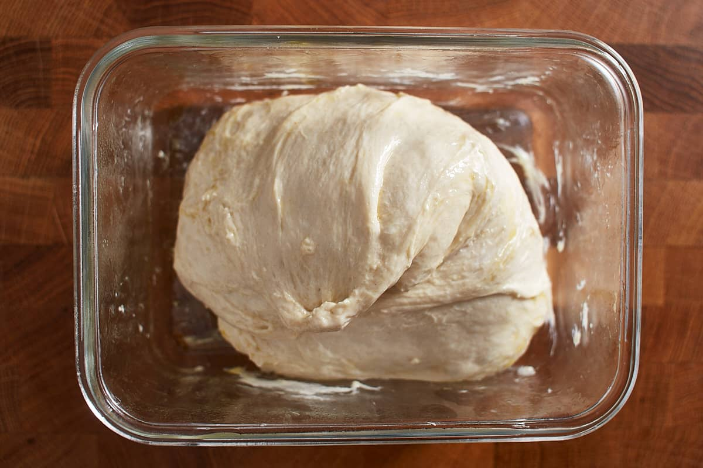

Cold Fermented Pizza Dough

Description
Excellent recipe for homemade pizza dough. Ferments in the fridge. Add some pizza sauce, cheese, and toppings, put it in the overn, and you have a delicious homemade pizza! You should follow another recipe for temperatures and bake times on the pizza itself.
Ingredients
- 4.5 cups flour
- 1.5 tablespoons sugar
- 2 teaspoons instant yeast
- 2 and change teaspoons table salt or 1 tablespoon kosher salt
- 3 tablespoons olive oil
- 15 ounces lukewarm water
Steps
- Mix flour, sugar, yeast, and salt.
- Pulse (rapid, short spurts of mixing, to homogenize) the mixture.
- Add olive oil and warm water.
- Incorporate oil and water into the mixture until it forms a ball. This will take more than 30 seconds.
- Sprinkle additional flour on flat, clean surface and transfer mixture onto surface.
- Knead the mixture until it is smooth.
- Divide the mixture into thirds and place each third in a plastic bag.
- Let the mixture rise in the fridge for at least a day and up to five days.
- Pull the mixture from the fridge for at least two hours prior to stretching and baking the dough to make a pizza.
Return to main page